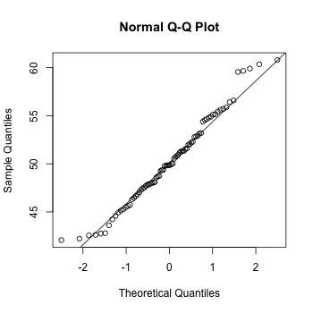
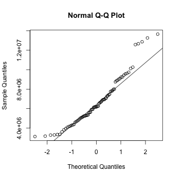
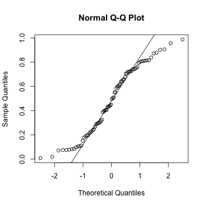

Q-Q plot
Problem
You want to compare the distribution of your data to another distribution. This is often used to check whether a sample follows a normal distribution, to check whether two samples are drawn from the same distribution.
Solution
Suppose this is your data:
set.seed(183) # Normally distributed numbers x <- rnorm(80, mean=50, sd=5) # Uniformly distributed numbers z <- runif(80)
# Compare the numbers sampled with rnorm() against normal distribution qqnorm(x) qqline(x) # The same numbers to the 4th power, compared to the normal distribution qqnorm(x^4) qqline(x^4) # Numbers sampled from the flat distribution, compared to normal qqnorm(z) qqline(z)
  